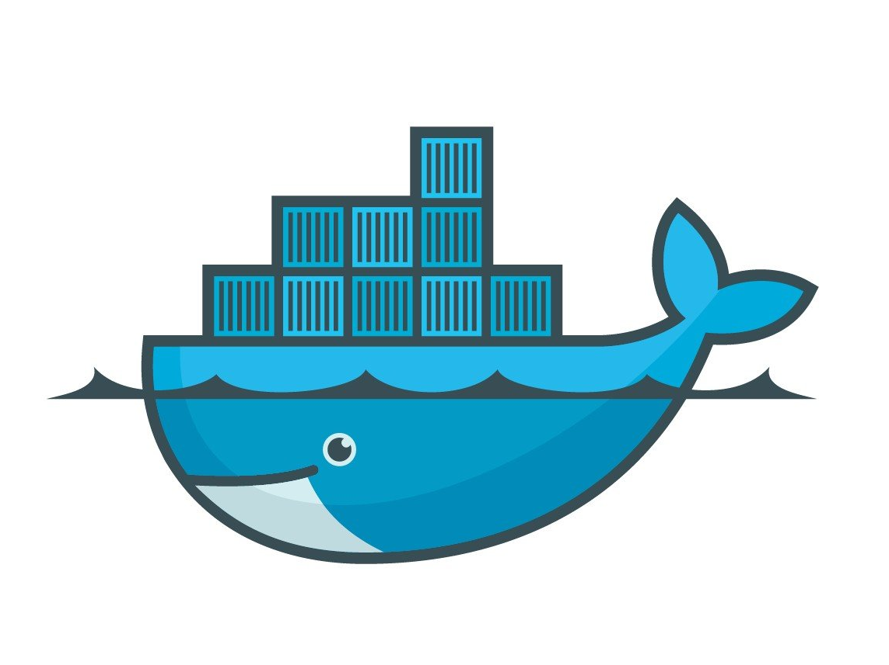

Portfolio! What I did?
The companies below I have worked forand some of Projects that I have done.
Network Support Engineer

Linux Web Server Deployment

Docker Swarm Creation
Static Webpage deployment AWS